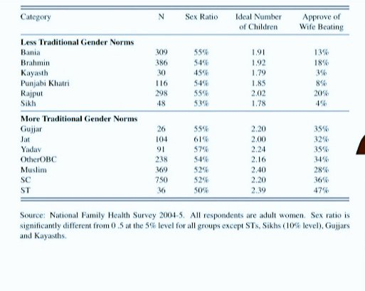
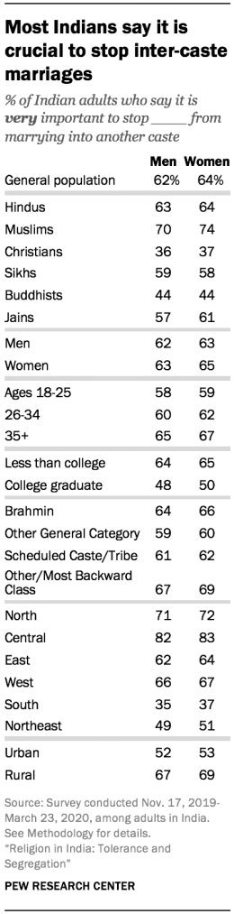
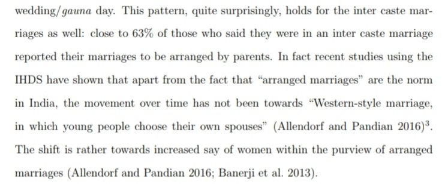
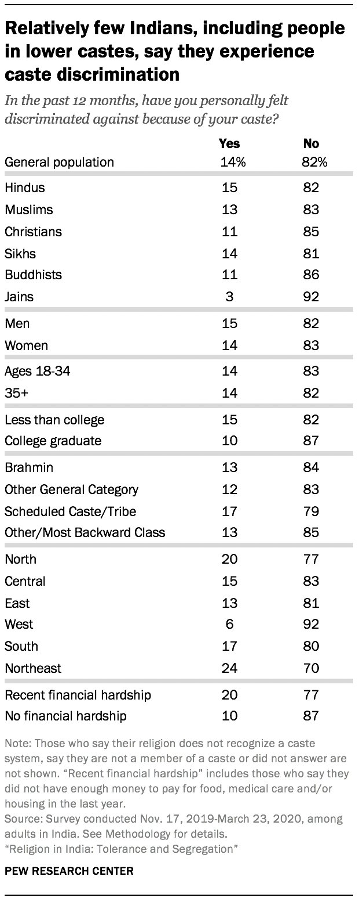
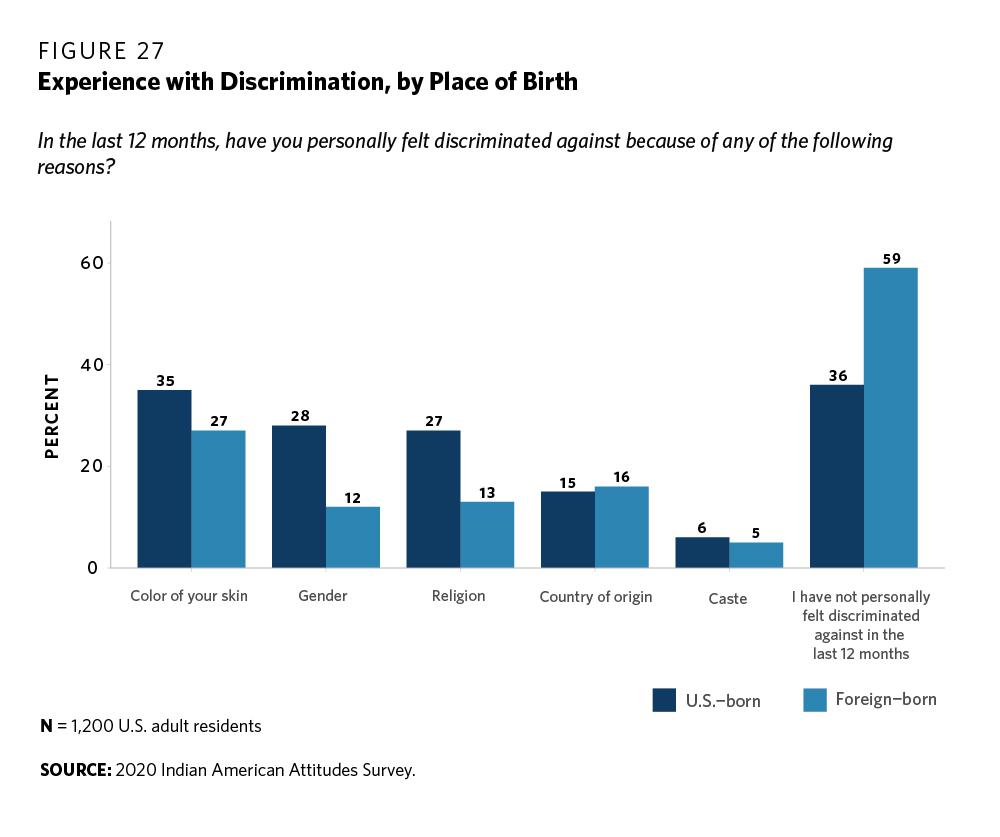

Jāti: What It Is and What It Is Not
The caste question in Indian public life is almost entirely an argument about something other than what it claims to be about. The people making the loudest noise about caste are not primarily interested in the welfare of lower-caste communities. They are interested in a particular story about Hindu civilization, specifically the story that its defining feature is a hierarchy of oppression traceable to Brahminical texts, enforced by upper-caste men, and uniquely resistant to the modernizing forces that have dissolved analogous structures elsewhere. This story is useful. It licenses a specific set of political conclusions, most of them involving the permanent guilt of Brahmins, the permanent grievance of lower castes, and the permanent relevance of a class of intermediaries who manage the relationship between the two.
Almost everything foundational to this story is wrong. Not wrong in the sense of being contested, but wrong in the sense of being contradicted by the best available evidence from population genetics, historical demography, comparative sociology, and the Indian census record itself. What follows is not a defence of caste as a normative order. It is a correction of the factual record, which is a prior and more urgent task.
I. Jāti Predates the Indo-Aryans
The standard account of caste origins holds that the varna system was brought to India by the Indo-Aryan migrants and imposed on a pre-existing egalitarian or at least non-hierarchical population. This account is wrong, and the evidence that makes it wrong has been accumulating for over a decade in ancient DNA research.
The key finding comes from analysis of Indus Valley Periphery samples dated between 3000 and 2000 BCE, a period that substantially predates the Indo-Aryan migration into the subcontinent.[1] These samples show a wide variation in AASI (Ancient Ancestral South Indian) ancestry proportions. In a panmictic population, admixture evens out over generations. The fact that it has not evened out, that you see structured genetic differentiation in populations living in proximity over centuries, is the genetic signature of endogamy. These communities were already not freely intermarrying. The endogamous framework that we call jāti was already operating.
Razib Khan, writing in 2022, put the implication directly: the Indo-Aryans, when they arrived, were integrated into a pre-existing jāti framework rather than creating one.[2] This is consistent with what we know about Indo-European social structure more broadly. The tripartite varna system of rulers, priests, and commoners is found across Indo-European populations from ancient Greece to Germania, as Dumézil documented exhaustively. But the Indian jāti system, with its thousands of endogamous sub-communities, its occupational specificity, its horizontal rather than purely vertical organization, is not found anywhere else in the Indo-European world. It is not an Indo-European import. It is something the Indo-Europeans walked into.
A separate line of evidence confirms this for South India specifically. Watkins et al. (2012), examining genetic differentiation patterns in South Indian communities, traced the divergence between groups to periods prior to the southward migration of Brahmins into the peninsula.[3] Whatever process was creating genetically distinct endogamous communities in South India, Brahmin arrival was not its cause. Brahmins arrived into a landscape already structured by jāti.
II. The Ādivāsi Problem
The political category "Ādivāsi" carries an implicit claim: that the tribal populations of India are the original inhabitants, that the upper castes are settlers or invaders, and that this historical priority licenses a specific contemporary politics of grievance and restitution. The genetic evidence makes this claim incoherent.
Kumar et al. (2019), examining the paternal ancestry of Austro-Asiatic Munda-speaking tribal populations, found that their paternal ancestors arrived in the subcontinent around the same time as, and in some cases substantially later than, the Indo-Aryan migrants whose descendants are now classified as upper-caste Hindus.[4] The Munda-speaking peoples are themselves migrants. The question of who is truly original to any given patch of Indian soil has no clean answer, because the subcontinent has been receiving waves of migration from multiple directions across many millennia. The Ādivāsi/settler binary is a political construction, not a historical one.
III. Brahminical Patriarchy: The Data
The phrase "Brahminical patriarchy" has become standard in Indian academic and activist discourse, and it carries a specific claim: that patriarchal norms in India originate in, are sustained by, and are most severe among Brahmin communities and their cultural hegemony. The National Family Health Survey data from 2004 to 2005 allows this claim to be tested directly.

The results do not support the claim. They invert it. Brahmin women report an 18% approval rate for wife-beating. Kayasth women report 3%. These are the two lowest figures in the entire sample. The groups classified as having "More Traditional Gender Norms" are Gujjar (35%), Jat (32%), Yadav (35%), Other OBC (34%), SC (36%), and ST (47%). The gradient runs precisely opposite to what the Brahminical patriarchy narrative predicts. The communities with the most patriarchal attitudes by these measures are not the communities with historical Brahmin cultural influence; they are communities that have historically been further from it.
This is not a minor anomaly to be explained away. It is a systematic pattern across the entire dataset that directly falsifies the central empirical claim of the Brahminical patriarchy thesis. The thesis survives not because of the evidence but in spite of it, which is a reasonable description of most of what passes for caste analysis in Indian academia.
IV. Muslim Caste Is Not Hindu Caste
A persistent move in Indian caste discourse is to treat the presence of caste-like structures among Indian Muslims as evidence that these were absorbed from Hindu practice, which in turn is taken to mean that caste is a Hindu problem that infected Muslims rather than a Muslim problem that deserves independent scrutiny. Both the historical and the genetic evidence make this story untenable.
If jāti predates the Vedic religion, as the evidence suggests, then neither Hinduism nor Islam created it. Both traditions arrived into a landscape already structured by endogamous communities and accommodated themselves to that structure. The relevant question is not which religion introduced caste but how each tradition's internal hierarchy related to the pre-existing jāti order. And here the two traditions are not symmetrical.
The ashraf/ajlaf/arzal hierarchy in subcontinental Islam placed the vast majority of converts, including the bulk of lower-caste Hindus who converted precisely to escape their social position, at the bottom of a racial pyramid with Arab-descended Muslims at the top. This hierarchy is not borrowed from Indian tradition. It is grounded in specific interpretations of primary Islamic sources that privilege Arab lineage and treat non-Arab Muslims as spiritually and socially inferior.[5] The promise of conversion was equality before God; the reality was a new hierarchy with a new set of people at the top.

The survey evidence confirms this. Pew's 2020 survey found that Indian Muslims are more likely to oppose inter-caste marriage than Indian Hindus: 70 to 74 percent of Muslims say it is very important to stop their community from marrying into another caste, compared to 63 to 64 percent of Hindus.[6] Among Hindus, the group most opposed to inter-caste marriage is not Brahmins. It is OBCs. The community that is supposed to be the primary victim of Brahminical caste enforcement is more committed to caste endogamy than the community that is supposed to be the enforcer.
V. Arranged Marriage and Endogamy Are Orthogonal
A common conflation in discussions of Indian marriage is between arranged marriage as a practice and caste endogamy as a norm. These are treated as if they were the same phenomenon or as if one necessarily produces the other. The data says otherwise.

Deshpande and Ramachandran (2020) found that approximately 63 percent of inter-caste marriages in India are arranged by parents.[7] This number is striking because the standard narrative treats arranged marriage as the mechanism by which caste endogamy is enforced: parents arrange marriages within caste, thereby perpetuating the system. But if 63 percent of the inter-caste marriages that break this pattern are themselves arranged by parents, then arranged marriage is not a caste-enforcement mechanism. It is simply a marriage mechanism. Endogamous families use it to arrange endogamous marriages. Inter-caste families use it to arrange inter-caste marriages. The practice is neutral with respect to the outcome.
Allendorf and Pandian (2016) add a further complication to the standard modernization narrative, which predicts a shift from arranged to self-selected marriages as India develops.[8] The actual shift is not toward Western-style individual spouse selection. It is toward increased female agency within the arranged marriage framework. Indian women are gaining more say in whom they marry, but within a system that remains arranged rather than self-selected. Arranged marriage is not merely a proxy for tradition or backwardness. It is a genuine institutional form with its own internal logic and its own trajectory of change.
Banerjee et al.'s MIT working paper on mate selection in modern India adds the sharpest finding: caste preference in mate selection is primarily horizontal rather than vertical.[9] People want to marry within their jāti not primarily because they believe their jāti is superior to others but because they want to marry someone familiar, someone from a known community, someone whose family will share their cultural reference points. This is endogamy as identity practice, not endogamy as hierarchy enforcement. It goes against the traditional story about the caste system, which emphasizes its hierarchical structure, and which is the story that makes caste a useful political instrument.
VI. The Discrimination Numbers
The most politically loaded empirical claim about caste is that it produces widespread discrimination in contemporary India and among the Indian diaspora. This claim is used to justify a range of policy interventions, from reservation extension to California's SB 403, which proposed to add caste as a protected category under anti-discrimination law. The survey evidence does not support the premise.

Pew's 2020 survey asked respondents whether they had personally felt discriminated against because of their caste in the past 12 months. Eighty-two percent of the general population said no. Among Scheduled Caste and Scheduled Tribe respondents, the groups with the strongest historical claims to caste-based discrimination, 79 percent reported no caste discrimination in the past year.[6] Fourteen percent of SC/ST respondents said yes. This is not zero, and it is not nothing. But it is also not the picture of pervasive daily discrimination that dominates the discourse.

Among Indian-Americans, the 2020 Indian American Attitudes Survey found that only 5 to 6 percent of respondents reported experiencing caste discrimination in the past 12 months. Approximately 35 percent reported experiencing racial discrimination.[10] An Indian-American is roughly six times more likely to face racism in the United States than casteism from their own community. The political effort to frame caste discrimination as the primary harm facing Indian-Americans is a misrepresentation of the actual distribution of harms they face.
VII. Colonial Amplification and the SC Economic Question
The socioeconomic disadvantage of Scheduled Caste communities in India is real and requires explanation. The standard explanation attributes it to centuries of Brahminical oppression. The historical record suggests a more proximate and more precisely documented cause.
Chamar communities held a dominant position in the leather industry of pre-colonial India. Leather work was not a degraded occupation in the pre-colonial economy; it was a skilled, economically significant trade with established markets and patronage networks that included upper-caste Hindu consumers. The British East India Company and subsequently the Raj systematically dismantled this industry through a combination of trade policy, the introduction of imported machine-tanned leather, and the reorganization of procurement that cut out traditional artisan communities from supply chains.[11] The communities that had derived economic sustenance from this industry were left without their primary source of income, without alternative industrial employment, and without the social capital to navigate the new colonial economy. Their current disadvantage is substantially a colonial inheritance, not a Hindu one.
This matters not as an exculpation of Hindu society but as a matter of causal accuracy. If the primary driver of SC disadvantage is colonial economic destruction rather than Hindu ritual hierarchy, then the policies designed to address it should look different. Reservation systems that redistribute symbolic prestige and government employment do not address the destruction of productive economic capacity. They address the wrong problem.
VIII. The British Made Caste Rigid
Nicholas Dirks, in Castes of Mind (2001), argued that caste as we currently understand it, as a rigid, enumerated, legally codified system of permanent identity, is substantially a colonial construction.[12] Before British administrative intervention, jāti identities were more fluid, more contextual, and less determinative of legal status and economic opportunity than they became under colonial rule. The British census, beginning in 1871, required every Indian to be assigned to a caste category. These categories were then used to determine eligibility for government employment, military recruitment, educational access, and legal standing. What had been a complex, negotiated, locally variable social landscape became a fixed administrative grid.
The irony is complete. The colonial power that claimed to be modernizing India away from caste was simultaneously the primary institutional force that made caste rigid, enumerable, and legally consequential. The India that emerged from colonial rule was more caste-conscious, not less, than the India that entered it. The post-colonial Indian state, by retaining and extending the colonial census-and-reservation apparatus, has continued this project under different political auspices.
None of this means jāti is benign. It means the problem is being diagnosed incorrectly, which guarantees that the prescriptions will fail. Jāti is a pre-Vedic, pre-Islamic, possibly pre-agricultural social structure that has been successively colonized by the varna system, by Islamic racial hierarchy, and by the British administrative state, each of which bent it to their own purposes. It is not a Hindu invention and it is not primarily a Hindu problem. Understanding it correctly is a prerequisite for addressing it honestly. The current discourse has not managed either.
Notes
- Narasimhan, V. M. et al. "The formation of human populations in South and Central Asia." Science 365, eaat7487 (2019). https://www.science.org/doi/10.1126/science.aat7487 ↩
- Khan, Razib. "Indra is absolved: The caste system predates the Indo-Aryans." Gene Expression, August 15, 2022. https://www.gnxp.com/WordPress/2022/08/15/indra-is-absolved-the-caste-system-predates-the-indo-aryans/ ↩
- Watkins, W. S. et al. "Genetic variation in South Indian castes: evidence from Y-chromosome, mitochondrial, and autosomal polymorphisms." PLOS ONE 7(12): e50269 (2012). https://journals.plos.org/plosone/article?id=10.1371/journal.pone.0050269 ↩
- Kumar, V. et al. Scientific Reports 9, 5562 (2019). https://www.nature.com/articles/s41598-019-40399-8 ↩
- "Islam Divided" series. The Print. https://theprint.in/tag/islam-divided/ ↩
- Pew Research Center. Religion in India: Tolerance and Segregation. June 2021. Survey conducted November 2019 – March 2020. https://www.pewresearch.org/religion/2021/06/29/religion-in-india-tolerance-and-segregation/ ↩
- Deshpande, M. and Ramachandran, R. ISID working paper, February 2020. https://www.isid.ac.in/~tridip/Research/IntercasteMarriage_18February2020.pdf ↩
- Allendorf, K. and Pandian, R. K. American Sociological Review (2016); cited in Deshpande and Ramachandran (2020). ↩
- Banerjee, A. et al. "Marry for What? Caste and Mate Selection in Modern India." MIT working paper. https://economics.mit.edu/sites/default/files/publications/Marry%20for%20What%20Caste%20and%20Mate%20Selection%20in%20Modern.pdf ↩
- Indian American Attitudes Survey (2020). Carnegie Endowment for International Peace / Johns Hopkins SAIS. ↩
- "The Real Cost of Leather: Chamars, Cow, and Colonialism." Pragyata. https://pragyata.com/the-real-cost-of-leather-chamars-cow-and-colonialism/ ↩
- Dirks, Nicholas B. Castes of Mind: Colonialism and the Making of Modern India. Princeton University Press, 2001. See also: "How the British reshaped India's caste system." BBC, June 2019. https://www.bbc.com/news/world-asia-india-48619734 ↩